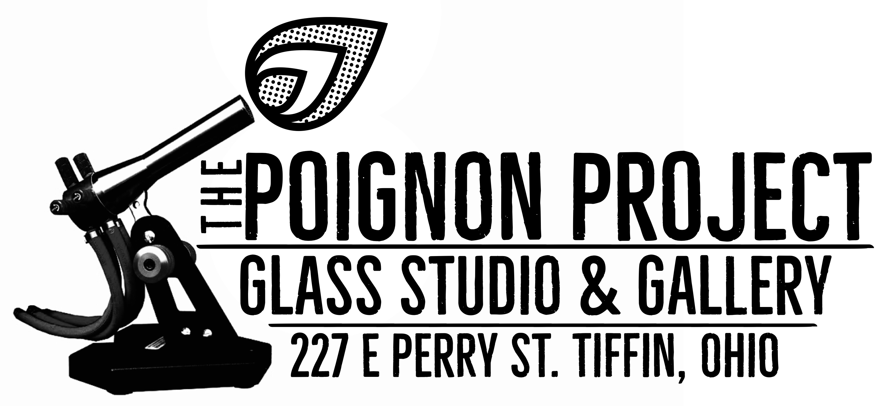

The Poignon Project
The magical art of glassblowing is alive and well at the Poignon Project, Glass studio and gallery at 227 E. Perry Street in Tiffin.
We offer a wide variety of handmade glass items including ornaments, marbles, sculptures, stemware, jewelry and many other great glass products all made also custom glass and glassblowing classes.
All of our products are proudly made right here at The Poignon Project in Tiffin, Ohio.